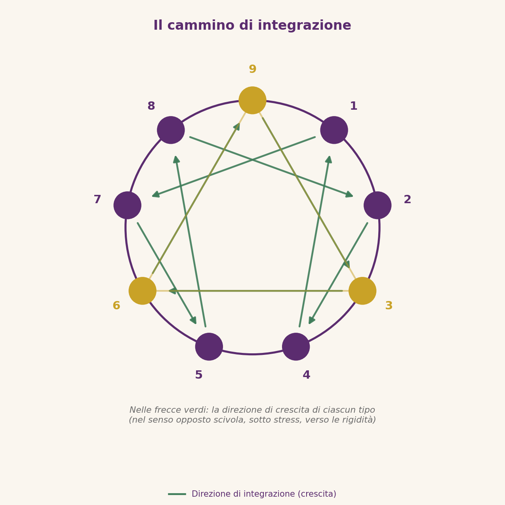

⬤ Tappa del percorso: il «come si cresce» — integrazione e ritorno all’Essenza. (Tappa 4 di 4)
Il cammino di crescita
Il tipo non è una condanna
La buona notizia dell’Enneagramma è che il tipo di base è un adattamento, non un’identità: descrive ciò che fai per proteggerti, non ciò che sei. L’Essenza intera non è andata persa — è stata offuscata. Il lavoro su di sé consiste nel ridurre gradualmente l’oscuramento.
Da dove si comincia
Il primo passo è osservare la propria passione e la propria fissazione senza giudizio: accorgersi del momento in cui la rabbia si impasta di risentimento (1), della paura che scansiona il futuro (6), della fretta di passare all’esperienza successiva (7). Non per correggersi, ma per smettere di identificarsi con lo schema.
La direzione di integrazione
Ogni tipo «sale» verso un altro punto del simbolo assumendone le qualità sane: l’1 ritrova la gioia del 7, il 4 l’equanimità dell’1, il 6 la pace del 9, il 9 la determinazione del 3. Integrare non significa diventare un altro tipo, ma permettere all’Essenza di esprimersi senza più passare attraverso la difesa.

Ricomporre ciò che è stato diviso
Crescere, in questa prospettiva, significa reintegrare le parti di sé esiliate nell’infanzia: la vulnerabilità scacciata dall’8, la tristezza vietata al 7, la rabbia sepolta dal 9. Più la personalità si alleggerisce, più l’Essenza si manifesta — non come un’idea, ma come presenza, capacità di amare e di agire liberamente.
L’Enneagramma non chiede fede: chiede osservazione onesta. Bastano curiosità e gentilezza verso se stessi per iniziare. Il viaggio è lungo, ma ogni passo di consapevolezza restituisce un pezzo di ciò che eri.